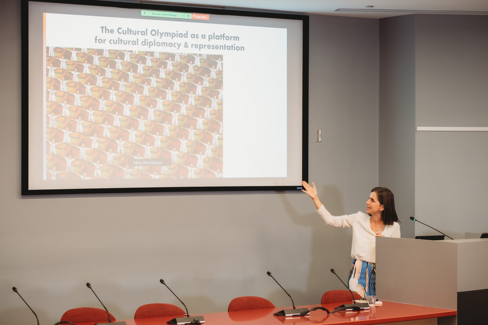
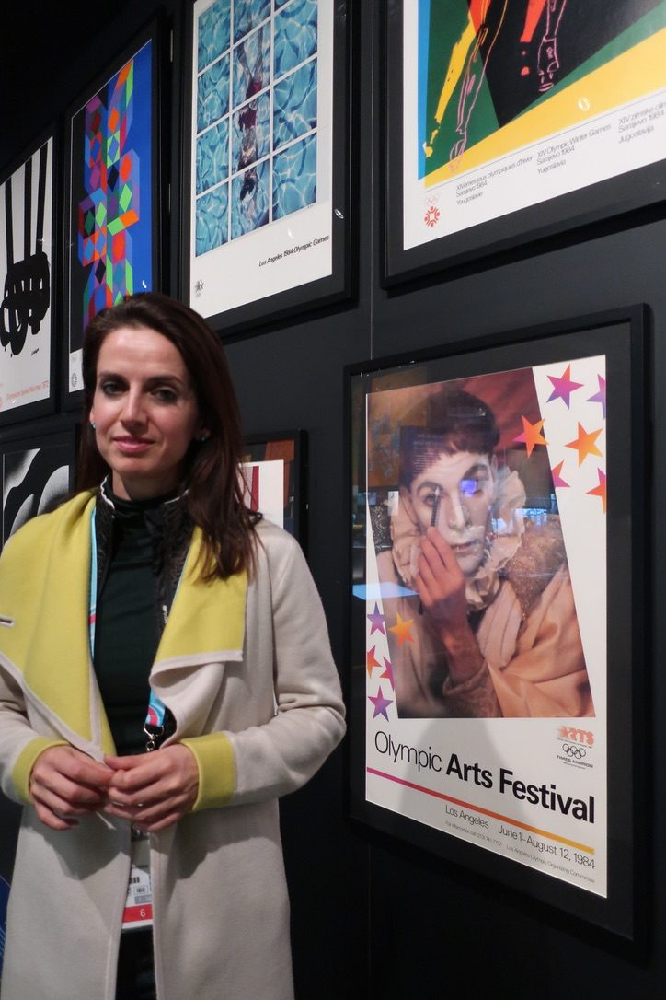

Research
The evidence base
Since 1999: long-run studies of what culture does for the cities that host the world's biggest events, commissioned by the bodies that run them.

Five themes
Each opens the archive on the current site
Olympic Games and Cultural Olympiads
From Sydney 2000 to Milano Cortina 2026: how the Games use culture, and what it leaves behind.
Open the archive European Capitals of CultureForty years of the programme, from Glasgow 1990 and Liverpool 2008 to Nikšić 2030.
Open the archive Cities, placemaking and regenerationCulture-led regeneration, city branding and creative clusters.
Open the archive Festivals and major eventsCommonwealth Games, Cities of Culture, festivals and their legacies.
Open the archive Evaluation and cultural valueFrameworks for measuring what culture does, from Impacts 08 to the Culturometer.
Open the archiveLandmark reports
- 2026Milano Cortina 2026 Cultural Olympiad Report, editor. Milano Cortina 2026 Organising Committee.
- 2025Culture as Catalyst: Assessing Bodø2024 European Capital of Culture, edited with A. Bourmistrov. Monitor 2024, Nord University.
- 2024Paris 2024 Cultural Olympiad Evaluation. Paris 2024.
- 2024Evaluation for Change: a guide to planning a mixed-methods framework for evaluation, with J. Neelands. Centre for Cultural Value.
- 2021What Future for Festivals? Salzburg Global Seminar.
- 2013European Capitals of Culture: Success Strategies and Long-Term Effects. European Parliament.
- 2013London 2012 Cultural Olympiad Evaluation. Arts Council England and partners.
- 2010Creating an Impact: Liverpool's Experience as European Capital of Culture, with R. Melville and T. Cox. University of Liverpool, Impacts 08.

Books
- 2012The Olympic Games and Cultural Policy. Routledge.
- 2012Olympic Games: The Basics, with Andy Miah. Routledge.
- NextEuphoric Cities, in development. About Euphoric Cities
Selected articles
- 2024Cultural Olympiads. In Olympic Cities, Gold and Gold (eds). Routledge.
- 2022The Olympic Movement and cultural policy: historical challenges and ways forward. Journal of Olympic Studies.
- 2008One hundred years of cultural programming within the Olympic Games (1912–2012). International Journal of Cultural Policy.
- 2005De-constructing the City of Culture: the long-term cultural legacies of Glasgow 1990. Urban Studies.
- 2004Urban regeneration, arts programming and major events: Glasgow 1990, Sydney 2000 and Barcelona 2004. International Journal of Cultural Policy.